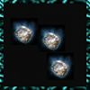
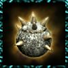
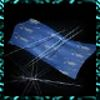

| 名称 | 伤害 | 特效 | 描述 | |
|  | 飞蝗石 | -30 | 内伤+5 | 最普通的暗器 |
| 飞刀 | -50 | 内伤+6 | 飞是小李飞刀的刀 | |
| 金蛇锥 | -80 | 内伤+7 | 金蛇郎君成名暗器 | |
 |
霹雳弹 | -100 | 内伤+7 | 一硫二硝三碳调制而成（小村对着韦小宝使用银两购买，1000两10个） |
|  | 毒蒺藜 | -40 | 中毒+40 内伤+6 |
球上有刺，刺上有毒 |
|  | 玉蜂针 | -60 | 中毒+60 内伤+6 |
古墓派含毒暗器 |
 |
冰魄银针 | -70 | 中毒+70 内伤+6 |
古墓派含毒暗器 |
 |
黑血神针 | -80 | 中毒+80 内伤+7 |
日月神教暗器，含剧毒 |